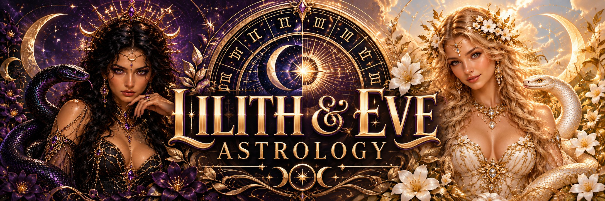

The serpent, the 13-sign wheel, and the mythology behind the brand.

In Star Chart 13, Lilith and Eve are not treated as rivals, warnings, or cautionary tales.
They are brought together.
One represents refusal.
The other represents curiosity.
One walks away from a story that would contain her.
The other reaches toward knowledge even when she has been told not to.
Together, they become the symbolic foundation of a different way of looking at astrology, mythology, and the feminine.
This is not a claim that ancient religious texts secretly described Lilith and Eve as lovers or that they historically created a 13-sign astrological system. It is a modern mythic reinterpretation that uses their stories as a symbolic framework for Star Chart 13.
Lilith has become one of mythology’s most powerful symbols of female autonomy.
In later Jewish folklore, she is associated with a story in which she refuses submission and leaves Eden rather than surrender her equality.
That refusal is the part that matters to the mythology of Star Chart 13.
Lilith represents the part of the self that says:
She symbolizes sovereignty, exile, shadow, sexuality, independence, anger, instinct, and truths that are often pushed outside acceptable boundaries.
Astrologically, Black Moon Lilith is commonly interpreted as a symbolic point connected with taboo, autonomy, rejection, desire, and the parts of ourselves that resist domestication.
Within this brand, Lilith becomes the guardian of what has been excluded.
Eve represents a different kind of rebellion.
She does not leave the Garden.
She reaches.
She wants to know.
The fruit of the Tree of Knowledge becomes, in this reinterpretation, not merely a symbol of disobedience but a symbol of consciousness.
Eve represents curiosity, embodiment, earthly wisdom, choice, experience, and the willingness to cross the boundary between innocence and knowledge.
Her symbolic question is:
Where Lilith refuses the command, Eve investigates it.
Where Lilith says no, Eve asks why.
Together, their stories create two different pathways toward sovereignty.
Traditional stories usually keep Lilith and Eve apart.
In Star Chart 13, that separation ends.
They meet not as replacements for one another, not as rivals for a man, and not as opposing versions of womanhood.
They meet as equals.
And in the mythology of this system, they fall in love.
Their relationship represents the reunion of two archetypes that were historically treated as separate:
THE WOMAN WHO REFUSES
and THE WOMAN WHO KNOWS.
Lilith brings the wild truth.
Eve brings the embodied wisdom.
Their union becomes the symbolic restoration of something divided.
The serpent is one of the most important symbols in Star Chart 13.
In many religious interpretations, the serpent becomes associated with deception, temptation, or the fall.
But serpents have carried many other meanings across cultures, including wisdom, renewal, transformation, healing, fertility, death, rebirth, and cyclical change.
A serpent sheds its skin.
It survives by becoming new.
That symbolism connects naturally with Ophiuchus, the Serpent Bearer.
Ophiuchus becomes the bridge between Lilith and Eve.
Lilith stands beside the serpent as primal truth.
Eve reaches toward the serpent as knowledge.
Ophiuchus holds the serpent as transformation.
The Garden of Eden is usually remembered as a place that was lost.
Star Chart 13 imagines something different.
What if the Garden was not destroyed?
What if it was reclaimed?
The Reclaimed Garden is a symbolic space where forbidden knowledge is no longer treated as dangerous simply because it disrupts an established order.
It is where Lilith returns.
It is where Eve is no longer ashamed of wanting to know.
It is where the serpent is restored as a symbol of wisdom and transformation.
And it is where the celestial wheel itself becomes complete again.
Within the mythology of the brand, the 13-sign wheel becomes part of that Garden.
Not a perfectly symmetrical system.
Not twelve identical boxes.
Something stranger.
Something uneven.
Something alive.
Astrology has always been filled with mythology.
Mars, Venus, Mercury, Saturn, Jupiter, the Moon, the Nodes, Lilith, constellations and zodiac figures all carry layers of story alongside astronomical observation.
Star Chart 13 continues that tradition openly.
The astronomical positions are one layer.
The mythology is another.
And the interpretation is another.
The mythology of Lilith and Eve does not prove an astronomical claim.
It gives the chart a symbolic language.
Many older astrological traditions developed within cultures whose expectations around gender, marriage, sexuality, and family were very different from those of modern life.
Star Chart 13 intentionally creates room for interpretations that do not automatically assume heterosexual marriage, conventional gender roles, motherhood, or traditional relationship structures.
This is especially important in relationship astrology.
A lesbian relationship does not need to be interpreted as a distorted version of a heterosexual one.
A queer relationship does not need to be squeezed into someone else’s symbolism.
The chart can instead ask:
The love story between Lilith and Eve is deliberately symbolic.
It imagines two mythic women finding one another outside the roles assigned to them.
Not because ancient sources tell us that this happened.
But because mythology can be retold.
That is what mythology has always done.
Every generation inherits old symbols and asks new questions of them.
In this version of the story, Lilith does not remain outside the Garden forever.
Eve does not remain trapped inside shame.
They meet at the boundary.
The serpent is there.
The stars are above them.
And instead of another exile, there is recognition.
This mythology connects directly to the chart experience called Celestial Chart Resurrection.
The idea of resurrection here is not literal religious resurrection.
It means restoration.
Something forgotten is brought back into view.
A chart is examined again.
The familiar version remains visible, but another layer is placed beside it.
The constellations are allowed back into the conversation.
Ophiuchus is allowed back into the wheel.
Lilith and Eve are allowed back into the same story.
And the user gets to decide what the comparison means to them.
That is the plot twist.
The phrase at the center of Star Chart 13 is:
The plot twist is not:
“You were lied to.”
It is not:
“Everything you knew was fake.”
It is much more interesting than that. It is:
WHAT HAPPENS WHEN YOU LOOK AGAIN?
The point is not to force an answer.
The point is to reveal the comparison.
Lilith refused.
Eve questioned.
The serpent carried knowledge.
Ophiuchus carried the serpent.
And the wheel opened again.
Compare the chart you know with your astronomical constellation placements.
RESURRECT MY CHART